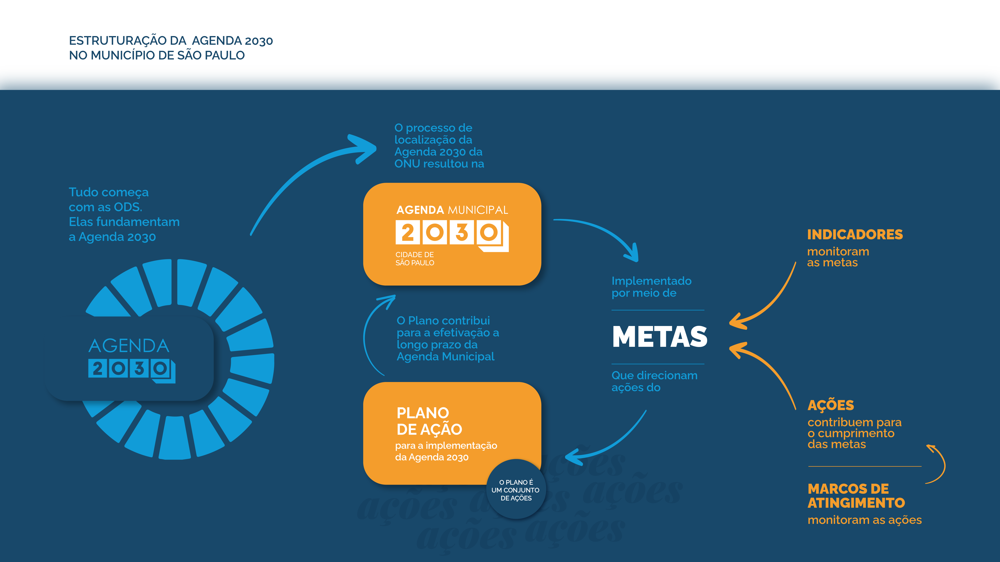

A Agenda 2030 é uma agenda programática de desenvolvimento pactuada, em 2015, pelos 193 países membros da Organização das Nações Unidas (ONU), dentre eles o Brasil.
A Agenda define 17 Objetivos do Desenvolvimento Sustentável e 169 metas para promoção do desenvolvimento sustentável para o planeta, as pessoas, com paz e prosperidade. É uma bússola para que todos os países, governos, empresas, organizações públicas e privadas trabalhem em parceria para garantir melhores condições de vida e proteger o futuro do planeta.
O Município de São Paulo aderiu voluntariamente ao compromisso em 2 de fevereiro de 2018, por meio da Lei Municipal nº 16.817, de iniciativa do Legislativo, que adotou a Agenda 2030 como diretriz das políticas públicas em âmbito municipal. Tal compromisso foi reforçado com a assinatura de Memorando de Entendimento juntamente à ONU, em novembro de 2018.
Dentre demais providências, a Lei Municipal prevê a instalação da Comissão Municipal para o Desenvolvimento Sustentável (Comissão Municipal ODS), instância colegiada paritária de natureza consultiva e deliberativa, de composição intersecretarial, para a efetivação do Programa Municipal de Implementação da Agenda 2030 para o Desenvolvimento Sustentável da Organização das Nações Unidas.
Esta publicação, intitulada Agenda Municipal 2030, reúne o conjunto de objetivos, metas e indicadores para o Município de São Paulo propostos pela Comissão Municipal ODS.
Veja como navegar no documento:
Nos termos do Decreto nº 60.166 de 2021, o “Plano de Ação para Implementação da Agenda Municipal 2030” deve ser proposto pela Comissão Municipal ODS no primeiro ano de cada gestão municipal, para o período dos quatro anos subsequentes, e deverá ser concluído em até 180 dias após a publicação do Programa de Metas.
Seu conteúdo mínimo deve abarcar estratégias, instrumentos, ações e programas para a efetivação da Agenda 2030 para o Desenvolvimento Sustentável da Organização das Nações Unidas no município de São Paulo.
Para o quadriênio 2021-2024, foi proposta a elaboração do Plano de Ação para Implementação da Agenda Municipal 2030 em alinhamento com os compromissos do Programa de Metas 2021-2024 e com o planejamento orçamentário do Plano Plurianual 2022-2025. Para isso, cada Câmara Temática da Comissão Municipal ODS se dedicou à análise do impacto que as ações previstas em ambos os instrumentos têm sobre as suas respectivas metas da Agenda Municipal 2030, e, também, ao levantamento de outras ações complementares previstas em planejamentos setoriais, detalhando estas ações no chamado “Formulário das Ações” por meta da Agenda Municipal 2030.
Os 17 Objetivos do Desenvolvimento Sustentável é feito por meio de indicadores que podem ser acompanhados aqui neste site do Observatório ODS.
A execução do Plano de Implementação é monitorada através dos marcos de atingimento das ações, entenda:
O monitoramento do Plano de Implementação é publicado anualmente na página da Secretaria Executiva de Planejamento e Entregas Prioritárias e também pode ser visto abaixo:
Como instrumento de longo prazo abrangente, a Agenda 2030 integra e norteia todos os instrumentos de planejamento municipal, como o Programa de Metas, o Plano Plurianual e os Planos quadrienais de Implementação.
O resultado será uma cidade de São Paulo mais sustentável, com maior qualidade de vida, educação, saúde, menores índices de pobreza e desigualdade social e adaptada à mudança do clima.
Veja no diagrama abaixo como as temporalidades e trajetórias de cada instrumento de planejamento se relaciona com a Agenda: